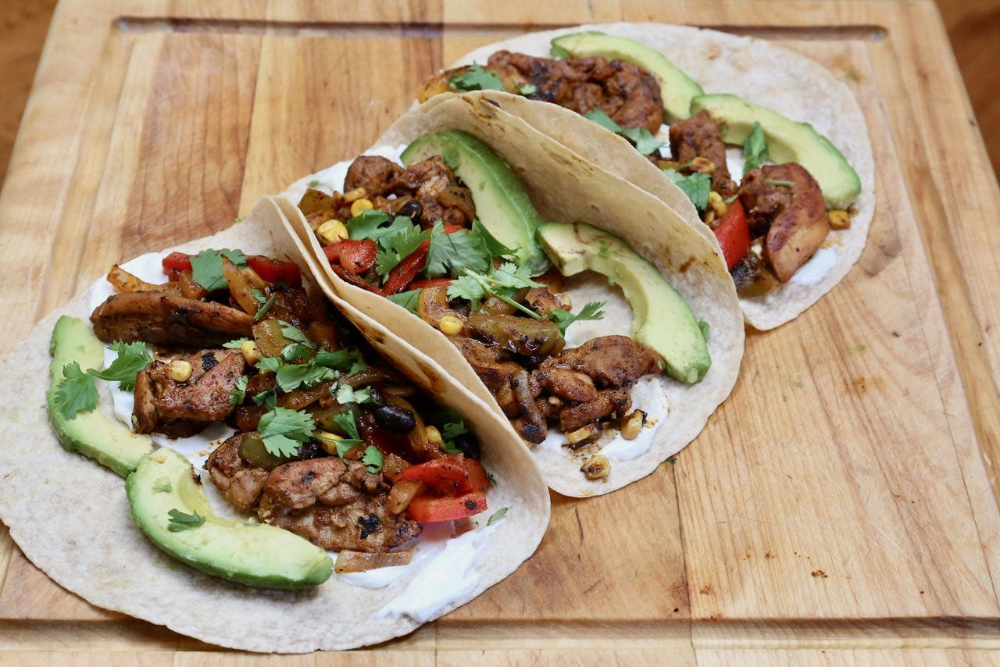

Fajita Tacos

Ingredients
- Corn or Flour Tortillas
- Beef or Chicken Fajita
- Avocados
- Mexican Cheese
- Refried Beans
- Rice
- Limes
- Cilantro
- Salsa
Steps
- In a large skillet, cook the fajita meat on medium high heat until desired
browness.
- In a separate skillet, warm up the refried beans.
- Cook rice in a rice cooker or pot with caldo de pollo.
- Cook tortillas in a small pan one at a time.
- Cut the avocados and limes and mix to make homemade guacamole with desired
spices.
- Plate your tortillas and make your tacos.
- Optional: Garnish with cheese, guacamole, cilantro, and salsa.